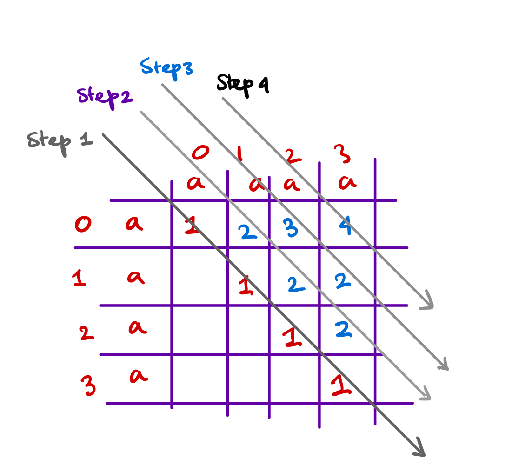
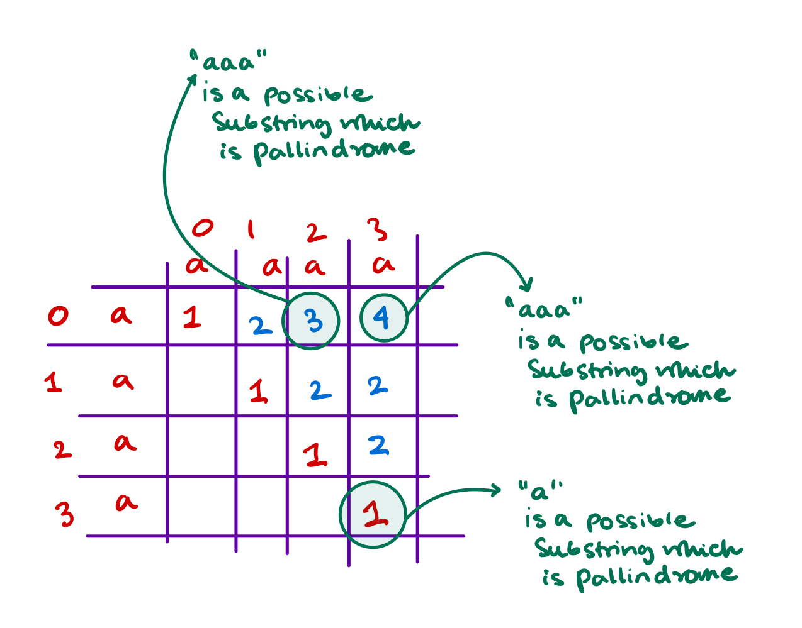

Dynamic programming
There is a famous quote saying that "those who don't remember the past are condemned to repeat it". This quote very much synchronizes with the meaning of dynamic programming. What in dynamic programming you do is you calculate and remember the calculation, if and when the same calculation is encountered again, instead of recomputing it you fetch the data this reducing computing time.
There are several problems where you are required to calculate something multiple times and if you cache the data then you can avoid computation multiple times. Let's see some of the problems where you need to cache some result to avoid multiple computations.
Table of Contents
- Climbing Stairs
- Frog Jump
- House Robber
- House Robber II
- Maximum Number of Jumps to Reach the Last Index
- Longest Palindromic Substring
- Palindromic Substrings
- Minimizing Coins
- Coin Combinations I
- Coin Combinations II
- Removing Digits
- Grid Paths
- Minimum Path Sum
- Longest increasing subsequence
- Edit distance
- Maximize the Profit as the Salesman
- Maximum Profit in Job Scheduling
Climbing Stairs
Find the Problem on Leetcode \(\to\)
Problem Statement
You are climbing a staircase. It takes n steps to reach the top. Each time you can either climb 1 or 2 steps. In how many distinct ways can you climb to the top?
Example
Input: n = 2
Output: 2
Explanation: There are two ways to climb to the top.
1. 1 step + 1 step
2. 2 steps
Input: n = 3
Output: 3
Explanation: There are three ways to climb to the top.
1. 1 step + 1 step + 1 step
2. 1 step + 2 steps
3. 2 steps + 1 step
Approach
We are told that we can only reach to the top with once step or 2 step in the staircase. The number ways we can reach to the top is exactly the number of ways we can reach to the \(n -1^{th}\) step \(+\) number of ways we can reach to the \(n -2^{nd}\) step. So we quickly write a recursive function and will only compute if not aready computed.
Code
class Solution {
private:
unordered_map<int, int> mp;
public:
int climbStairs(int n) {
if (n <= 2) return n;
if (mp.find(n) == mp.end()) {
int ways = climbStairs(n-2) + climbStairs(n-1);
mp.insert({n, ways});
}
return mp[n];
}
};
Time Complexity
The algorithm runs in \(O(N)\) time and with O(N) memory from the unordered_map and also takes extra auxiliary space due to recursive implementation.
Frog Jump
Find the Problem on Codestudio
Problem Statement
There is a frog on the 1st step of an \(N\) stairs long staircase. The frog wants to reach the \(N^{th}\) stair. HEIGHT[] is the height of the (i+1)th stair.If Frog jumps from ith to jth stair, the energy lost in the jump is given by HEIGHT[i-1] - HEIGHT[j-1].
In the Frog is on ith staircase, he can jump either to \((i+1)^{th}\) stair or to \((i+2)^{th}\) stair. Your task is to find the minimum total energy used by the frog to reach from 1st stair to \(N^{th}\) stair.
Approach
- We'll be using normal Dynamic Programming approach. We'll manually hard code the cost of moving for 0th (index which is 0) and 1st index (which is \(\text{heights[0] - heights[1]}\)).
- Then for each \(i\) we'll see the result for \(i-1\) and \(i-2\) and select the step that uses less energy.
- We update the energy lost at step \(i\) then go to step \(i+1\).
- We don't have to store the \([0 \to i]\) step costs because we are using only \(i-1\) and \(i-2\) values at any given \(i\). So a \(2\) element array or a
pair<int, int>is enough.
Code
#include <unordered_map>
int frogJump(int n, vector<int> &heights) {
// Write your code here.
int energy_lost = 0;
pair<int, int> store;
store.first = 0;
store.second = std::abs(heights[1] - heights[0]);
for (int i=2; i<n; i++) {
int oneStepCost = store.second + std::abs(heights[i] - heights[i-1]);
int twoStepCost = store.first + std::abs(heights[i] - heights[i-2]);
int energyLostNow = std::min(oneStepCost, twoStepCost);
store.first = store.second;
store.second = energyLostNow;
}
return store.second;
}
Time Complexity
The algorithm runs in \(O(N)\) time and with no extra memory.
House Robber
Find the problem on Leetcode \(\to\)
Problem Statement
You are a professional robber planning to rob houses along a street. Each house has a certain amount of money stashed, the only constraint stopping you from robbing each of them is that adjacent houses have security systems connected and it will automatically contact the police if two adjacent houses were broken into on the same night.
Given an integer array nums representing the amount of money of each house, return the maximum amount of money you can rob tonight without alerting the police.
Examples
Input: nums = [1,2,3,1]
Output: 4
Explanation: Rob house 1 (money = 1) and then rob house 3 (money = 3).
Total amount you can rob = 1 + 3 = 4.
Input: nums = [2,7,9,3,1]
Output: 12
Explanation: Rob house 1 (money = 2), rob house 3 (money = 9) and rob house 5 (money = 1).
Total amount you can rob = 2 + 9 + 1 = 12.
Approach
We'll be using a DP apporach to solve this problem, the main objective is to come up with some recursive solution standing at the \(i^{th}\) location. So let's build an intuition around that,
For location \(i = 0\) you only can rob the \(0^{th}\) house, and standing at the \(1^{st}\) house you can either rob the \(0^{th}\) house and skip the \(1^{st}\) house or skip the \(0^{th}\) house and rob the \(1^{st}\) house whichever gives more profit. So we'll do the following, we'll indicate for index \(i -1\) a map m which will show what could have been the maximum profit we could make till \(i-1\) index.
Depending upon the choice at index \(i\) we'll update the maximum profit we can make till this location \(i\).
What are the decisions you need to make before you can make a move at location \(i\)? The question can be answered by looking at the \(i-1^{th}\) location see what is the maximum you can make till \(i-1\). Then you either skip this location and make a move at the next location or make a move at this location and skip the next location. Take whatever maximizes the profit.
- So profit till \(0\) will be
nums[0] - profits till \(1\) will be
std::max(nums[0], nums[1]) - Profits at location \(2\) will be the following
- Either you take the profit from the \(0^{th}\) index and rob the \(2^{nd}\) location
- or you take the profit till the \(1^{st}\) location and skip the second location.
- \(\forall x \in [0, \text{nums.size})\) we'll see what is maximum between the following two
profits[i-1]andprofits[i-2] + nums[i]. We'll take the maximum and put in the profits map or array.
Code
class Solution {
public:
int rob(vector<int>& nums) {
int size = nums.size();
// base cases are trivially solvable
if (size == 1) return nums[0];
if (size == 2) return std::max(nums[0], nums[1]);
if (size == 3) return std::max(nums[0] + nums[2], nums[1]);
pair<int, int> profits;
profits.first = nums[0];
profits.second = std::max(nums[0], nums[1]);
for (int i=2; i<nums.size(); i++) {
int max_profit_possible = std::max(profits.first + nums[i], profits.second);
profits.first = profits.second;
profits.second = max_profit_possible;
}
return profits.second;
}
};
Time Complexity
The algorithm runs in \(O(N)\) time and with no extra memory.
House Robber II
Find the Problem on Leetcode \(\to\)
Problem Statement
You are a professional robber planning to rob houses along a street. Each house has a certain amount of money stashed. All houses at this place are arranged in a circle. That means the first house is the neighbor of the last one. Meanwhile, adjacent houses have a security system connected, and it will automatically contact the police if two adjacent houses were broken into on the same night.
Given an integer array nums representing the amount of money of each house, return the maximum amount of money you can rob tonight without alerting the police.
Approach
The approach is similar to the last problem, there the last house was not connected to the first house. What we'll do in the problem is considering the first (\(0^{th}\)) house we'll calculate the profits, and not considering the first (\(0^{th}\)) house we'll calculate the profits, the we'll return the maximum.
If we consider the first (\(0^{th}\)) house then we should never consider the last house so we ignore the last house. For the case when we do not consider the first (\(0^{th}\)) house, we must ignore the first (\(0^{th}\)) house explicitly. To do that we set profits[0] = 0 and profits[1] = nums[1], this forces the algorithm to drop the first (\(0^{th}\)) house.
We'll also force the algorithm to take the first (\(0^{th}\)) house by setting profits[0] = nums[0] and profits[1] = nums[0].
Code
class Solution {
public:
int rob(vector<int>& nums) {
int size = nums.size();
// base cases trivially solvable
if (size == 1) return nums[0];
if (size == 2) return std::max(nums[0], nums[1]);
if (size == 3) return std::max(nums[0] + nums[2], nums[1]);
// forcing the algorithm to take the 0th house
pair<int, int> profits;
profits.first = nums[0];
profits.second = nums[0];
// profits considering 0th index
// if we consider the 0th index then we can not rob the last index
// so we run the algorithm till size - 2
for (int i=2; i<=size-2; i++) {
int max_profit_so_far = std::max(profits.first + nums[i], profits.second);
int temp = profits.second;
profits.second = max_profit_so_far;
profits.first = temp;
}
// profits not considering the 1st index
// forcing algorithm to not take the 0th house
pair<int, int> profits2;
profits2.first = 0;
profits2.second = nums[1];
// profits not considering 0th index
// if we do not consider the 0th index then we can rob the last index
// so we run the algorithm till the last index
for (int i=2; i<size; i++) {
int max_profit_so_far = std::max(profits2.first + nums[i], profits2.second);
int temp = profits2.second;
profits2.second = max_profit_so_far;
profits2.first = temp;
}
return std::max(profits.second, profits2.second);
}
};
Time Complexity
The algorithm runs in \(O(N)\) time and with no extra memory.
Maximum Number of Jumps to Reach the Last Index
You are given a 0-indexed array nums of n integers and an integer target.
You are initially positioned at index 0. In one step, you can jump from index \(i\) to any index \(j\) such that:
- \(i < j\) and
- \(\textsf{abs}(\textsf{nums}[i] - \textsf{nums}[j]) \leq \textsf{target}\)
Examples
Input: nums = [1,3,6,4,1,2], target = 2
Output: 3
Explanation: To go from index 0 to index n - 1 with the maximum number of jumps, you can perform the following jumping sequence:
- Jump from index 0 to index 1.
- Jump from index 1 to index 3.
- Jump from index 3 to index 5.
It can be proven that there is no other jumping sequence that goes from 0 to n - 1 with more than 3 jumps. Hence, the answer is 3.
---
Input: nums = [1,3,6,4,1,2], target = 3
Output: 5
Explanation: To go from index 0 to index n - 1 with the maximum number of jumps, you can perform the following jumping sequence:
- Jump from index 0 to index 1.
- Jump from index 1 to index 2.
- Jump from index 2 to index 3.
- Jump from index 3 to index 4.
- Jump from index 4 to index 5.
It can be proven that there is no other jumping sequence that goes from 0 to n - 1 with more than 5 jumps. Hence, the answer is 5.
---
Input: nums = [1,3,6,4,1,2], target = 0
Output: -1
Explanation: It can be proven that there is no jumping sequence that goes from 0 to n - 1. Hence, the answer is -1.
Code
class Solution {
public:
int maximumJumps(vector<int>& nums, int target) {
int n = nums.size();
int dp[n]; // dp[i] = maximumJumps to reach location i.
memset(dp, -1, sizeof(dp));
dp[0] = 0;
for (int i = 0; i < n; i++) {
if (dp[i] == -1) continue;
for (int j = i + 1; j < n; j++) {
if (abs(nums[i] - nums[j]) <= target) {
dp[j] = std::max(dp[j], 1 + dp[i]);
}
}
}
return dp[n - 1];
}
};
Longest Palindromic Substring
Find the problem on leetcode \(\to\)
Problem Statement
Given a string s, return the longest palindromic substring in s.
Examples
Input: s = "babad"
Output: "bab"
Explanation: "aba" is also a valid answer.
Input: s = "cbbd"
Output: "bb"
Approach
- We'll make a 2D array called
dp, now for each entry \((i, j)\) indpshows whether from \(i \to j\) is a palindromic substring or not and what is the size of that pallindrome? - First for all entries \((i, j)\) in
dpsuch that \(i = j\) is a palindromic substring because one character word is always a pallindrome. - Now we'll move diagonally right next from the main diagonal. Look at the below picture to understand how are we moving? 
- So we need to design the for loops accordingly. If we look closely to the change of \((i, j)\) we'll see that each time \(i\) start from \(0\) and \(j\) starts from \(i + \text{some number}\), that some number is increasing by \(1\) every iteration.
- First iteration \(i\) starts from \(0\) and \(j\) starts from \(i + 1\) and then in the next iteration \(i\) again starts from \(0\) and \(j\) starts from \(i + 2\) and so on. So we can design the for loops accordingly.
- Now standing at some location \((i, j)\) meaning looking at the string from \(i \to j\) we need to decide whether it is a pallindrome or not? If the characters \(s[i] = s[j]\) means it is a pallindrome if and only if the substring \(s[i+1 \, \to \, j-1]\) is a palindrome. this item \(s[i+1 \, \to \, j-1]\) can be reused to avoid further computation.
Code
class Solution {
private:
int max_length = INT_MIN;
pair<int, int> indexOfMax;
public:
string longestPalindrome(string s) {
int size = s.size();
// base cases are trivially solvable
if (size == 1) return s;
if (size == 2) {
if (s[0] == s[1]) return s;
}
if (size == 3) {
if (s[0] == s[2]) return s;
}
// our storage is dp of size n x n
vector<vector<int>> dp(size, vector<int>(size, 0));
// all the size one character is a pallindrome so mark 1
for (int i=0; i<size; i++) {
dp[i][i] = 1;
}
// now we update the following pattern
// 00 11 22 33 44 .. done
// 10 21 32 43 54 ..
for (int diff = 1; diff<size; diff++) {
for (int i=0, j=i+diff; j<size; i++, j++) {
if (s[i] == s[j]) {
// means the last 2 elements are similar
if (std::abs(i - j) == 1) {
// means there is no extra element b/w
// s[i] and s[j] they are together
// so from i to j it is pallindrome
dp[i][j] = 2;
if (dp[i][j] > max_length) {
indexOfMax.first = i;
indexOfMax.second = j;
max_length = dp[i][j];
}
} else {
// means there is some elements b/w i and j
// check they are pallindrome or not?
if (dp[i+1][j-1] != 0) {
dp[i][j] = dp[i+1][j-1] + 2;
if (dp[i][j] > max_length) {
indexOfMax.first = i;
indexOfMax.second = j;
max_length = dp[i][j];
}
} else {
dp[i][j] = 0;
}
}
} else {
// means it is not pallindrome
dp[i][j] = 0;
}
}
}
// max size of the pallindrome is stored at indexOfMax;
// the pallindrome is starting from indexOfMax.first to indexOfMax.second;
// return this
vector<char> result;
for (int i=indexOfMax.first; i<=indexOfMax.second; i++) {
result.push_back(s[i]);
}
string s1(result.begin(), result.end());
return s1;
}
};
Palindromic Substrings
Given a string s, return the number of palindromic substrings in it. A string is a palindrome when it reads the same backward as forward. A substring is a contiguous sequence of characters within the string.
Examples
Input: s = "abc"
Output: 3
Explanation: Three palindromic strings: "a", "b", "c".
Input: s = "aaa"
Output: 6
Explanation: Six palindromic strings: "a", "a", "a", "aa", "aa", "aaa".
Approach
- The solution is almost similar to the last problem where we were required to find the longest size of the pallindrome, for that we constructed a two dimensional array
dpto store for all possible values of \((i, j)\) if there exists a pallindrome or not? - Then we found what is the maximum of them and returned it.
- But where we are required to find the number of such palindromic sub-strings. So our
dparray indicates for each \((i, j)\) such that \(i<j\) \(\exists\) a pallindrome between \(s[i \to j]\). So if we count the number of non zero entries in thedparray we'll find the number of possible substrings in the string.

As we can see every non zero entry in the array dp shows us a unique substring that is a pallindrome between \(i \to j\).
Code
class Solution {
public:
int countSubstrings(string s) {
int size = s.size();
vector<vector<int>> dp(size, vector<int>(size, 0));
for (int i=0; i<size; i++) {
dp[i][i] = 1;
}
// go over the dp array to get the dp matrix sorted
for (int diff = 1; diff<size; diff++) {
for(int i=0, j=i+diff; j<size; i++, j++) {
if (s[i] == s[j]) {
if (std::abs(i - j) == 1) {
dp[i][j] = 2;
} else {
if (dp[i+1][j-1] != 0) dp[i][j] = dp[i+1][j-1] + 2;
else dp[i][j] = 0;
}
} else {
dp[i][j] = 0;
}
}
}
// check how many entries are non zero
int counter = 0;
for (int i=0; i<size; i++) {
for (int j=0; j<size; j++) {
if (dp[i][j] != 0) counter++;
}
}
return counter;
}
};
Minimizing Coins
Find the problem on CSES \(\to\)
Problem Statement
Consider a money system consisting of \(n\) coins. Each coin has a positive integer value. Your task is to produce a sum of money \(x\) using the available coins in such a way that the number of coins is minimal.
For example, if the coins are \(\{1,5,7\}\) and the desired sum is \(11\) an optimal solution is \(5+5+1\) which requires \(3\) coins.
Input Format The first input line has two integers n and x: the number of coins and the desired sum of money. The second line has n distinct integers \(c_1,c_2,\dots,c_n\) the value of each coin.
Output Format Print one integer: the minimum number of coins. If it is not possible to produce the desired sum, print -1.
Example
Input:
Output:Apporach
We need to build a \(\text{dp}\) vector. \(\text{dp[}i\text{]}\) will indicate minimum number of coins that will be required to get the value \(i\). So trivially \(\text{dp}[0] = 0\).
Now from \(1 \to \text{target}\) we'll check what is the minimum number of coins that will be required to get that value. If we look closely then we'll find that for any given \(i\): \(\text{dp[}i\text{]} = \text{Min(dp[i], dp[i - coin])}\) for each of the coins in the coin bag. So mathematically we can write
Hence the solution below:
C++ Code
#include <algorithm>
#include <iostream>
#include <vector>
using std::cin;
using std::cout;
using std::endl;
using std::vector;
int findMinNumberOfCoins(vector<int> &coinStore, int target) {
vector<int> dp(target + 1, 1e9); // dp[i] is the minimum number of coins to get target i
dp[0] = 0; // to get 0 as target we need 0 coins <- base case
for (int i = 1; i <= target; i++) {
// loop over all the coins
for (auto coin : coinStore) {
if (i - coin < 0) {
break;
}
dp[i] = std::min(dp[i], dp[i - coin] + 1);
}
}
return (dp[target] == 1e9) ? -1 : dp[target];
}
int main() {
// have coins, and a target
// find what is the min coins to take for the target
int coins, target;
cin >> coins >> target;
vector<int> coinStore;
while (coins--) {
int coin;
std::cin >> coin;
coinStore.push_back(coin);
}
std::sort(coinStore.begin(), coinStore.end());
cout << findMinNumberOfCoins(coinStore, target) << endl;
return 0;
}
Coin Combinations I
Find the problem on CSES \(\to\)
Consider a money system consisting of n coins. Each coin has a positive integer value. Your task is to calculate the number of distinct ways you can produce a money sum x using the available coins.
For example, if the coins are \(\{2,3,5\}\) and the desired sum is 9 then there are \(8\) ways.
Approach
Suppose \(dp[i]\) is such that it defines to get \(i\) value how many ways there is? So trivially \(dp[0] = 1\) for any given set of coins \(c_1, \dots c_n\). Now for any \(i \in \mathbb{N}\), \(dp[i]\) should be defined as follows
Let's see why \(\displaystyle\sum_{c \in \{c_1, c_2, \dots, c_n\}} dp[i - c]\) holds. For the target \(i\) and \(i > 0\) the number of ways to get to \(i\) is number of ways to get to \(i-c\) for each of the coins in \(\{c_1, c_2, \dots, c_n\}\). Hence we get the sum. The following is a code example working with this idea.
Code
#include <algorithm>
#include <iostream>
#include <vector>
using namespace std;
const int MOD = (int)1e9 + 7;
long long int findNumberOfWaysToGetTarget(int target, vector<long long int> &coinStore) {
vector<long long int> dp(target + 1, 0); // set all to 0 first, dp[i] represents ways to get i target via coinStore
dp[0] = 1; // base case only 1 way to get 0 with {coinStore}
for (int i = 1; i <= target; i++) {
for (int coin : coinStore) {
if (i - coin >= 0) {
dp[i] += dp[i - coin];
dp[i] = dp[i] % MOD;
}
}
}
return dp[target];
}
void fileIO() {
freopen("input.txt", "r", stdin);
freopen("output.txt", "w", stdout);
}
int main() {
int number_of_coins, target;
vector<long long int> coins;
cin >> number_of_coins >> target;
while (number_of_coins--) {
long long int coin;
cin >> coin;
coins.push_back(coin);
}
cout << findNumberOfWaysToGetTarget(target, coins) << endl;
return 0;
}
Coin Combinations II
Find the problem on CSES \(\to\)
Problem Statement
Same as the above problem statement but here we need to find unique solutions.
Approach
In the last problem we were required to find all possible ways to get to the target, so \(dp[i]\) was defining all the possible way we can get to the target \(i\). Then we did a traversal over all the coin \(c \in \{c_1, c_2, \dots, c_n\}\) and find out \(dp[i]\) as \(\displaystyle\sum_{c \in \{c_1, c_2, \dots, c_n\}} dp[i - c]\). This way considering coin \(c\) we added all the possibilities from \(dp[i - c]\).
But here we are required to find all possible ways but those should be unique, meaning \(5 + 5 + 1\) is same as \(1 + 5 + 5\) and \(5 + 1 + 5\). These three are not distinct cases these three are unique cases.
To use only distinct combinations of coins what we can do is loop over all the coins \(c \in \{c_1, c_2, \dots, c_n\}\), for each of the coin we set \(dp[i]\) as \(dp[i] + dp[i-c]\). Thus we'll loop over coins in order \(c \in \{c_1,c_2, \dots, c_n\}\) thus using unqiue combinations of coins \(\{c_i \mid i \in \{1, \dots, n\}\}\).
Code
The code is the exact same as the last problem, with slight changes made to the nesting of the for loops. The outer for loop of target is now inside the loop of coins in the coin store.
#include <algorithm>
#include <iostream>
#include <unordered_set>
#include <vector>
using namespace std;
const int MOD = (int)1e9 + 7;
long long int findNumberOfWaysToGetTarget(int target, vector<long long int> &coinStore) {
vector<long long int> dp(target + 1, 0); // set all to 0 first, dp[i] represents ways to get i target via coinStore
dp[0] = 1; // base case only 1 way to get 0 with {coinStore}
for (int coin : coinStore) {
for (int i = 1; i <= target; i++) {
if (i - coin >= 0) {
dp[i] += dp[i - coin];
dp[i] = dp[i] % MOD;
}
}
}
return dp[target];
}
void fileIO() {
freopen("input.txt", "r", stdin);
freopen("output.txt", "w", stdout);
}
int main() {
int number_of_coins, target;
vector<long long int> coins;
cin >> number_of_coins >> target;
while (number_of_coins--) {
long long int coin;
cin >> coin;
coins.push_back(coin);
}
cout << findNumberOfWaysToGetTarget(target, coins) << endl;
return 0;
}
Removing Digits
Find the problem on CSES \(\to\)
Problem Statement
You are given an integer n. On each step, you may subtract one of the digits from the number. How many steps are required to make the number equal to \(0\).
Example
Suppose the given number is 27, then the optimal number of digit removal is 5. The optimal solution is the following \(27 \rightarrow 20 \rightarrow 18 \rightarrow 10 \rightarrow 9 \rightarrow 0\).
Approach
We'll do a recursive apporach on this problem, the intuition for the recursive solution is really easy to understand. For a given number \(i\), we'll first find out what are the individual digits of this number. Then what we do is find out recursivly what is the minimum number of removals required accoss all the (number - digit) + 1.
For example what we do is for \(27\) we'll find out what is minimum between \(27 - 7\) and \(27 - 2\) then add \(1\). We have to make sure that we don't do this for digit \(0\). Hence the solution is the following.
Code
#include <algorithm>
#include <iostream>
#include <unordered_map>
#include <vector>
#include <climits>
using namespace std;
vector<int> getIndividualDigits(int number) {
vector<int> digits;
while (number > 0) {
digits.push_back(number % 10);
number /= 10;
}
return digits;
}
int findMinimumNumberOfSubtractions(int number, unordered_map<int, int> &store) {
// if already present then find and return
if (number == 0) return 0;
if (store.find(number) != store.end()) {
return store[number];
}
vector<int> individualDigits = getIndividualDigits(number);
int minimumNumberOfSubtractions = INT_MAX;
for (auto digit:individualDigits) {
if (digit) minimumNumberOfSubtractions = std::min(findMinimumNumberOfSubtractions(number - digit, store), minimumNumberOfSubtractions);
}
store[number] = minimumNumberOfSubtractions + 1;
return store[number];
}
int main() {
int number;
cin >> number;
unordered_map<int, int> store;
cout << findMinimumNumberOfSubtractions(number, store);
return 0;
}
Iterative version of the algorithm
int findMinimumNumberOfSubtractionsIterative(int number) {
vector<int> dp(number+1, 0);
dp[0] = 0;
for (int i=1; i<=number; i++) {
vector<int> individualDigits = getIndividualDigits(i);
int minNumberOfSubtractions = INT_MAX;
for (int d: individualDigits) {
if (d) minNumberOfSubtractions = std::min(minNumberOfSubtractions, dp[i - d]);
}
dp[i] = minNumberOfSubtractions + 1;
}
return dp[number];
}
Grid Paths
Find the problem on CSES \(\rightarrow\)
Problem Statement
Consider an \((n, n)\) grid whose squares may have traps. It is not allowed to move to a square with a trap. Your task is to calculate the number of paths from the upper-left square to the lower-right square. You can only move right or down.
Example
We should print the number of paths modulo \(10^9 + 7\)
Input/Output example
Approach
We find out a simple recursive equation to find out what is the number of ways to move to \((n, n)\) square.
Suppose we define \(dp[i][j]\) as number of ways to move to \((n, n)\) from location \((i, j)\) in the grid. Then our solution is \(dp[0][0]\). The base case here is at location \((n, n)\). Then \(dp[n][n] = 1\). We can easily see that the solution for any location \((i, j)\) is
Here \(dp[i + 1][j] + dp[i][j + 1]\) denotes number of ways to get from position \((i + 1, j)\) to \((n, n)\) and \((i, j + 1)\) to \((n, n)\) if \((i, j)\) is within the grid bounds, 0 otherwise.
Code
#include <iostream>
#include <string>
long long MOD = 1e9 + 7;
using std::cout;
using std::endl;
int main() {
int size;
std::cin >> size;
int grid[size][size];
int row = 0;
while (row < size) {
int col = 0;
while (col < size) {
char block;
std::cin >> block;
if (block == '.') {
grid[row][col] = 0;
} else {
grid[row][col] = 1;
}
col++;
}
row++;
}
long long int dp[size][size];
if (grid[size - 1][size - 1] == 0) {
dp[size - 1][size - 1] = 1; // trivial to go from size:size to size:size
} else {
cout << 0 << endl;
// exit program
return 0;
}
for (int r = size - 1; r >= 0; r--) {
for (int c = size - 1; c >= 0; c--) {
if ((r == size - 1 and c == size - 1))
continue;
long long int down = (r + 1 >= size) ? 0 : dp[r + 1][c];
long long int right = (c + 1 >= size) ? 0 : dp[r][c + 1];
dp[r][c] = down + right;
dp[r][c] = dp[r][c] % MOD;
if (grid[r][c])
dp[r][c] = 0;
}
}
cout << dp[0][0] << endl;
return 0;
}
Minimum Path Sum
Find the Problem on Leetcode \(\to\)
Problem Statement
Given a \((m, n)\) grid filled with non-negative numbers, find a path from top left to bottom right, which minimizes the sum of all numbers along its path.
Note: You can only move either down or right at any point in time.
Example
Input:
grid =
[
[1,3,1],
[1,5,1],
[4,2,1]
]
Output: 7
Explanation: Because the path 1 → 3 → 1 → 1 → 1 minimizes the sum.
Approach
The approach is similar to the last problem. We'll go from \((0, 0) \to (m, n)\) location of the grid row by row and column by column. For any given location \((i, j)\) we'll define a store \(dp[i][j]\) such that \(dp[i][j]\) indicates what is the minimum path sum to reach location \((i, j)\). Hence the solution should be \(dp[m - 1][n - 1]\).
Our recurrence relation is the following
Code
class Solution {
public:
int minPathSum(vector<vector<int>> &grid) {
int rows = grid.size();
int cols = grid[0].size();
int dp[rows][cols];
memset(dp, 0, sizeof(dp));
dp[0][0] = grid[0][0];
for (int i = 0; i < rows; i++) {
for (int j = 0; j < cols; j++) {
if (not i and not j) continue;
int left = (j - 1 >= 0) ? dp[i][j-1] : 1e9;
int up = (i - 1 >= 0) ? dp[i-1][j] : 1e9;
dp[i][j] = std::min(left, up) + grid[i][j];
}
}
return dp[rows - 1][cols - 1];
}
};
Longest increasing subsequence
Problem Statement
Given an integer array nums, return the length of the longest strictly increasing subsequence.
Example
Input: nums = [10,9,2,5,3,7,101,18]
Output: 4
Explanation: The longest increasing subsequence is [2,3,7,101], therefore the length is 4.
Input: nums = [0,1,0,3,2,3]
Output: 4
Input: nums = [7,7,7,7,7,7,7]
Output: 1
\(O(N^2)\) approach
We define \(dp[i]\) as the length of the longest increasing subsequence till the index \(i\). So trivially we can compute \(dp[i]\) as the following, and our solution becomes \(dp[n-1]\) where \(n\) is the number of elements. But this \(O(N^2)\) approach will not be accepted
Code
class Solution {
public:
int lengthOfLIS(vector<int>& nums) {
int size = nums.size();
vector<int> dp(size, 1);
dp[0] = 1;
for (int i = 1; i<size; i++) {
// from j = i-1 till 0 what is the max then add 1
for (int j = i -1; j >= 0; j--) {
if (nums[i] > nums[j]) {
dp[i] = std::max(dp[i], dp[j] + 1);
}
}
}
// find max accoss all dp[i]
int sol = dp[0];
for (int i=1; i<size; i++) {
sol = std::max(dp[i], sol);
}
return sol;
}
};
Edit distance
Problem Statement
The edit distance between two strings is the minimum number of operations required to transform one string into the other.
The allowed operations are: - Add one character to the string. - Remove one character from the string. - Replace one character in the string.
For example, the edit distance between LOVE and MOVIE is 2, because you can first replace L with M, and then add I.
Your task is to calculate the edit distance between two strings.
Input
The first input line has a string that contains n characters between A–Z. The second input line has a string that contains m characters between A–Z.
Output
Print one integer: the edit distance between the strings.
Approach
So we need to find the recurrence relation to solve this question. What we'd do is the following, we define \(dp[i][j]\) as the following, \(dp[i][j]\) is the minimum edit distance to go from string one [0 \(\dots\) i] to string two [0 \(\dots\) j].
Given this we can say the following recurrence based on the following conditions
- If we add one character to string one then \(dp[i][j]\) becomes \(dp[i][j - 1] + 1\). We are adding one character to string one so \(1\) and as we are adding one character to string we need to consider \(dp[i][j-1]\) because \(j^{\text{th}}\) character in string two would match with the character at i in string one then we need to move \(j\) one to the left.
- If we remove one character from string one then \(dp[i][j]\) becomes \(dp[i - 1][j] + 1\). We are removing one character from string one so \(1\) and removing one character from string one would mean that we need to check for the \((i - 1)^{\text{th}}\) character in the first string with \(j^{\text{th}}\) character in the second string.
- Otherwise if both are matching then we don't need to remove anything. If they are not matching and we replace then the cost becomes \(dp[i-1][j - 1] + 1\) if we replace the \(i^{\text{th}}\) character in string one, otherwise \(dp[i-1][j - 1] + 0\).
- For base cases if string one or string two is empty then simply return the size of the other string.
So in summary the following is the recurrence relation
Code
#include <iostream>
#include <string.h>
#include <vector>
using std::cin;
using std::cout;
using std::endl;
using std::string;
using std::vector;
int findMinimumEditDistace(string s1, string s2) {
int s1Size = s1.size();
int s2Size = s2.size();
// dynamic programming storage
// dp[i][j] defines what is the minimum edit distance to convert
// from s1[0..i] to s2[0..j]
int dp[s1Size + 1][s2Size + 1];
memset(dp, 0, sizeof dp);
// base cases
for (int j = 0; j <= s2Size; j++) {
// all entries in dp[0][j] for j in (0 to s2.size())
dp[0][j] = j;
}
for (int i = 0; i <= s1Size; i++) {
// all entries in dp[0][j] for j in (0 to s2.size())
dp[i][0] = i;
}
for (int i = 1; i <= s1Size; i++) {
for (int j = 1; j <= s2Size; j++) {
int costForRemovingLastFromS1 = dp[i - 1][j] + 1;
int costForInsertingOneAtS1 = dp[i][j - 1] + 1;
int costForReplacingAtLast = dp[i - 1][j - 1] + ((s1[i - 1] == s2[j - 1]) ? 0 : 1);
dp[i][j] = std::min(costForRemovingLastFromS1, costForReplacingAtLast);
dp[i][j] = std::min(costForInsertingOneAtS1, dp[i][j]);
}
}
return dp[s1Size][s2Size];
}
int main() {
string s1;
string s2;
cin >> s1;
cin >> s2;
cout << findMinimumEditDistace(s1, s2);
return 0;
}
Maximize the Profit as the Salesman
The next few questions are a part of Weighted Job Scheduling pattern. This is a famous dynamic programming pattern. Next we'll discuss that.
Problem Statement
You are given an integer \(n\) representing the number of houses on a number line, numbered from \(0\) to \(n - 1\).
Additionally, you are given a 2D integer array offers where \(\text{offers}[i] = \{\text{start}_i, \text{end}_i, \text{gold}_i\}\) indicating that \(i^{\text{th}}\) buyer wants to buy all the houses from \(\text{start}_i \to \text{end}_i\) for \(\text{gold}_i\) amount of gold.
As a salesman, your goal is to maximize your earnings by strategically selecting and selling houses to buyers.
Return the maximum amount of gold you can earn.
Note that different buyers can't buy the same house, and some houses may remain unsold.
Examples
Input: n = 5, offers = [[0,0,1],[0,2,2],[1,3,2]]
Output: 3
Explanation: There are 5 houses numbered from 0 to 4 and there are 3 purchase offers.
We sell houses in the range [0,0] to 1st buyer for 1 gold and houses in the range [1,3] to 3rd buyer for 2 golds.
It can be proven that 3 is the maximum amount of gold we can achieve.
---
Input: n = 5, offers = [[0,0,1],[0,2,10],[1,3,2]]
Output: 10
Explanation: There are 5 houses numbered from 0 to 4 and there are 3 purchase offers.
We sell houses in the range [0,2] to 2nd buyer for 10 golds.
It can be proven that 10 is the maximum amount of gold we can achieve.
Approach
The intuition behind this solution is to sort the offers by their starting positions and then use dynamic programming to compute the maximum profit that can be achieved while considering each offer.
- We start the process by sorting the offers based on their starting positions. This step ensures that the offers are considered in ascending order of their starting positions.
- Create a vector
firstto store the starting positions of each offer. This vector will help in finding the index of the next available offer for each offer.
Maximum Profit in Job Scheduling
Comments
This comments system is powered by GitHub Discussions